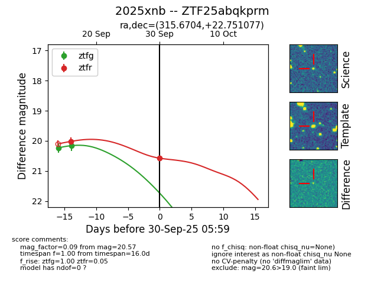
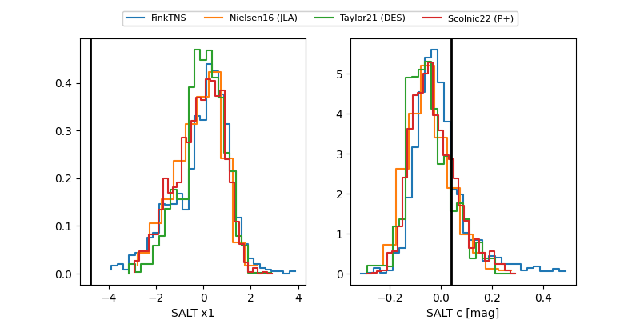

FINK: ZTF25abqkprm
Lasair: ZTF25abqkprm
ALeRCE: ZTF25abqkprm
TNS: 2025xnb
YSE: 2025xnb
ZTF25abqkprm (ztf,fink)
2025xnb (tns,yse)
equatorial (ra, dec) = (315.6704,+22.75108)
galactic (l, b) = (69.3612,-15.56858)


last ztfg=20.16, ztfr=20.57
2 ztfg, 2 ztfr detections